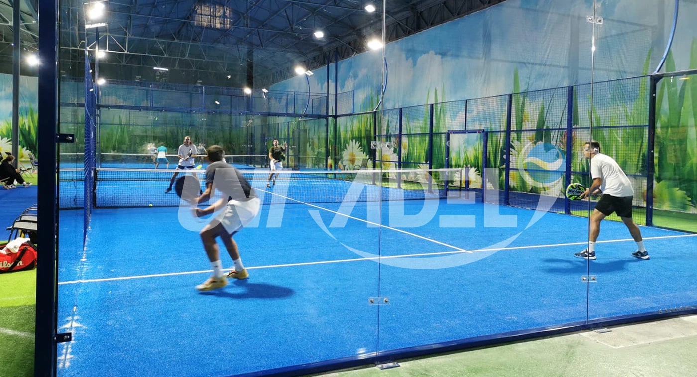

COMMERCIAL PADEL COURT SYSTEMS
Commercial Padel Courts Built Around the Project
For clubs, resorts, hotels, sports facilities and commercial developments. SPORTENVO coordinates court systems, foundation strategy, weather protection, technical drawings, manufacturing and installation guidance around the actual site.

Commercial Procurement
Do not buy the court as an isolated product.
A commercial padel project combines the playing enclosure with the site, foundation, drainage, lighting, weather exposure, logistics and installation plan. The right system depends on how the venue will operate and where it will be built.
Common project types
- Commercial Padel Clubs
- Hotels & Resorts
- Sports Facilities
- Contractor / Distributor Projects
Choose the Court Direction
Match the commercial requirement to the system.
Use these as first-stage project directions. Final suitability remains site-specific.
Panoramic Padel Court
Balanced visibility, presentation and commercial use for clubs, resorts and sports facilities.
Explore + PREMIUM SHOWCASESuper Panoramic Padel Court
Maximum visual openness for premium indoor venues and showcase courts.
Explore + PRACTICAL FIXED SITEClassic Padel Court
Durable traditional configuration for sports facilities, schools and practical commercial operation.
Explore +Site-Driven Systems
When the site condition changes the court strategy.
Mobile Padel Court
For relocatable projects and flexible sites where permanent civil work is not preferred.
Review + COASTAL / HIGH WINDFORCE-HX High-Wind System
Reinforced configuration for exposed coastal and high-wind project review.
Review + FOUNDATION STRATEGYModular Foundation Base
Engineered steel base direction for selected flexible-site installations.
Review +Weather Protection
Plan playing hours, not only the court.
Permanent Roof
For projects requiring continuous coverage and coordinated structural, drainage and foundation planning.
Review Roof SystemElectric Tent
For retractable open / closed weather protection where flexible operation is part of the venue model.
Review Electric TentCommercial Specification Checklist
Compare suppliers on one written scope.
A low headline price is not comparable if project-critical components or responsibilities are missing.
| Structure | Steel sections, connections, corrosion protection and the selected court configuration |
|---|---|
| Glass | 12 mm tempered glass in the confirmed project specification, with documentation and fixing details |
| Mesh & safety | Welded mesh, access openings, hardware and protective details |
| Playing surface | Padel turf system, infill, drainage interface and installation requirements |
| Lighting | Fixture specification, pole integration, electrical scope and local requirements |
| Foundation | Concrete or engineered modular direction based on ground / building condition and load path |
| Weather protection | Open-air, electric retractable tent or permanent roof according to climate and operating model |
| Project documents | Technical drawings, specification confirmation, QC documentation, packing information and installation guidance |
| Delivery scope | Manufacturing, packing, freight, unloading, lifting, local labor, permits and installation responsibilities clearly separated |
Commercial Buyer Path
Move from feasibility to a comparable quotation.
Project Evidence
Use completed projects to review real site conditions.
Commercial Buyer FAQ
Questions before requesting a padel court quotation.
What should a commercial padel court buyer compare?
Compare the complete written scope: court structure, 12 mm tempered glass, mesh, corrosion protection, turf, lighting, foundation interface, weather protection, drawings, packing, freight, installation guidance, documentation and local responsibilities.
Which padel court system is suitable for a commercial club?
Panoramic and Super Panoramic are common directions where visibility and presentation matter, while Classic can suit practical fixed-site operation. Mobile is relevant for relocatable sites and FORCE-HX is a reinforced direction for high-wind review.
Does a commercial padel court need a concrete foundation?
Many permanent projects use a suitable concrete base, while selected flexible-site projects can use an engineered modular foundation. Ground capacity, levels, drainage, anchoring and local requirements still need review.
Can SPORTENVO support roof or weather-protected projects?
Yes. SPORTENVO offers permanent roof and electric retractable tent directions. Clear height, wind, drainage, foundation reactions and local approvals should be reviewed with the court system.
What project information should I send for a quotation?
Send country and city, venue type, court quantity, site dimensions, indoor or outdoor condition, ground or building information, weather exposure, target opening date and any roof or relocation requirement.
Does SPORTENVO provide installation guidance?
Technical drawings, assembly information and installation guidance can be included in the confirmed project scope. Local civil work, permits, lifting and on-site labor responsibilities should be defined before shipment.
Project Review
Turn the site into a project specification.
Share the country, venue type, court quantity and current site information. We can review the court, foundation and weather-protection direction before the quotation is finalized.